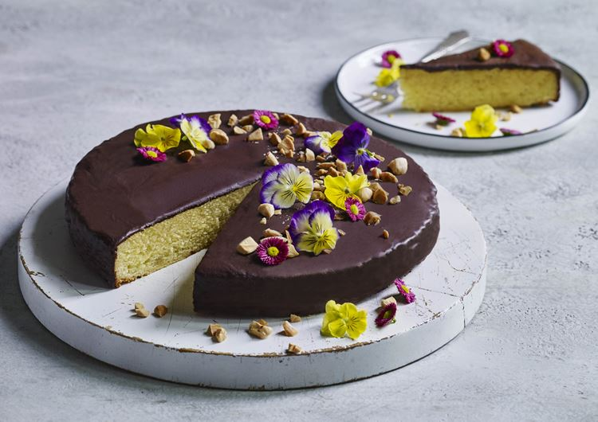

Filips kage
Mig og min kageopskrift

ingredienser
mazarinkage
- 150g blødt smør
- 150g sukker
- 150g groftevet marcipan
- 3 æg
- 5 spsk hvedemel
chokoladeovertræk
- 150g mørk chokolade
- 25g hakkede, ristede, smuttede mandler
pynt
- spiselige blomster, fx hornvioler
mazerintærte
- Pisk smør, sukker og marcipan godt sammen.
- Tilsæt æggene, et ad gangen - pisk godt ind imellem.
- Vend mel i dejen og kom den i en springform (ca. 22 cm i diameter) med bagepapir.
- Bag mazarinkagen midt i ovnen.
- Lad den køle af på en bagerist i ca. 10 min. Tag kagen ud af formen og lad den køle helt af.
chokoladeovertræk
- Smelt ⅔ af chokoladen i en skål over vandbad.
- Tag gryden af varmen og rør den sidste ⅓ af chokoladen i.
- Vend mazarinkagen over på et fad, med bunden opad.
- Smør chokolade på kagen overflade og side og pynt med mandler.
- Lad chokoladen stivne og pynt med blomster.
Gå til toppen